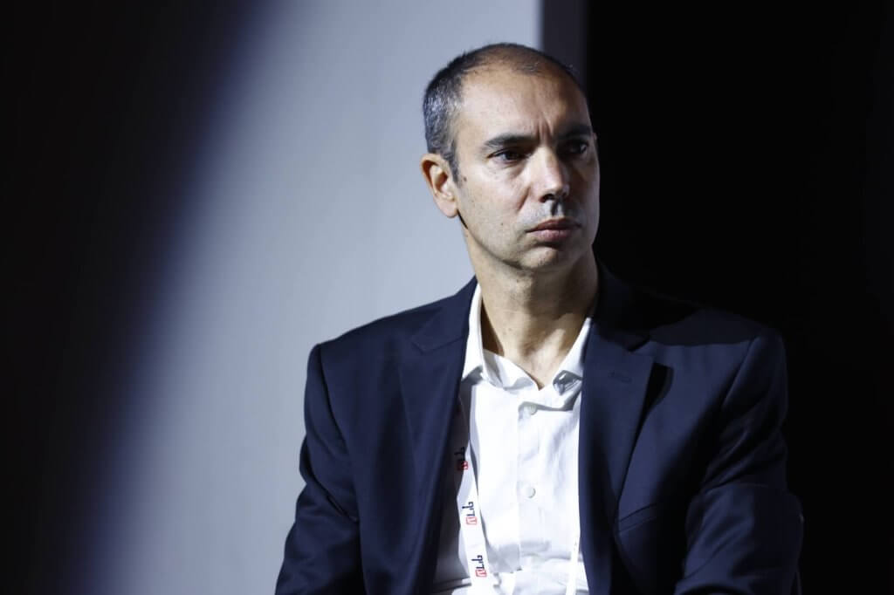

תכנון פיננסי
ניהול תיק השקעות חכם ומגוון - גידול הון לטווח ארוך
לפרטים נוספיםניווט ההון המשפחתי בראש שקט
ליצירת השילוב המנצח


ONE STOP SHOP
הכל תחת קורת גג אחת
תכנון פיננסי מתקדם לכל שלב בחיים
ניהול תיק השקעות חכם ומגוון - גידול הון לטווח ארוך
לפרטים נוספיםניהול אקטיבי של תיק ניירות הערך ופוליסות החיסכון הפיננסי
במגוון מסלולי השקעה
סקירת תיק הביטוח - ווידוא שהכיסויים מקיפים ובדיקת העלויות
לפרטים נוספיםמסלול מותאם לפרישה בגיל צעיר - חיים את החלום כמה שיותר מוקדם
לפרטים נוספיםליווי מקצועי לתכנון הפרישה האידיאלית - שיבטיח את רמת חייך
לפרטים נוספיםביטוחי רכב, דירה ועסק — כיסוי מקיף בתנאים הטובים ביותר
לפרטים נוספיםליווי מקצועי לקבלת המשכנתא הטובה ביותר —
מבנה נכון, ריבית מיטבית וחיסכון משמעותי בעלויות
סיוע בהכנת התשתית הכלכלית להעברת נכסים ליורשים בצורה יעילה, כולל התחשבות בהיבטי מס ומשפחה.
לפרטים נוספיםאיתור ומיצוי החזרי מס לשכירים ועצמאים
כסף שמגיע לך, בחזרה אליך
גיוון תיק ההשקעות מעבר לשוק ההון — נדל"ן, קרנות פרטיות וכלים ייחודיים לתשואה יציבה
לפרטים נוספים4 ענקיות הניהול והמחקר הפיננסי מגדירות את
ערך המתכנן הפיננסי
אחת מחברות ניהול הנכסים הגדולות בעולם (חלוצת קרנות המדד).
המושג: Advisor's Alpha
בהתאם למחקר של ואנגארד מתכנן פיננסי יכול להוסיף כ-3% לתשואה השנתית נטו,
בעיקר דרך ליווי התנהגותי (מניעת טעויות של הלקוח בזמן ירידות),
הקצאת נכסים נכונה ובניית אסטרטגיית מס יעילה.
חברת השקעות גלובלית המתמחה בייעוץ מוסדי ופתרונות השקעה רב-מנהליים.
המושג: Value of Advisor
הערך המוסף של מתכנן פיננסי גבוה מאוד ועומד על כ-4.87% לשנה.
בדגש רב על ניהול מס, תכנון פרישה והערך הרגשי התנהגותי שהיועץ מספק.
חברת מחקר ודירוג פיננסי מהמובילות בעולם, המוכרת בזכות דירוגי קרנות נאמנות ומניות.
המושג: Gamma
"גמא" מוגדר כערך שנוצר על ידי קבלת החלטות תכנוניות חכמות (כמו התנהלות בפרישה). מורנינגסטאר מעריכים זאת ב-1.80% תוספת לתשואה,
או בשיפור של 22% בהכנסה הריאלית לאורך זמן.
חברת טכנולוגיה פיננסית (FinTech) מובילה המספקת פלטפורמות לניהול עושר עבור מאות אלפי יועצים פיננסיים.
המושג: Capital Sigma
בדומה לוואנגארד, הם מעריכים את הערך המוסף של מתכנן פיננסי בכ-3.00% לשנה בממוצע.
למאמר המלא לחץ כאןטל גבאי
מתכנן פיננסי לבכירים | מנכ"ל ובעלים
מתכנן פרישה | תואר שני M.B.A במנהל עסקים
המסע המקצועי שלי בעולם הכסף החל בלב העשייה הפיננסית בישראל. בשנת 2006 כיהנתי כמנהל בבית ההשקעות אקסלנס,
שם "מאחורי הקלעים" רכשתי הבנה מעמיקה וייחודית על הדרך שבה שוק ההון פועל.
בכדי להביא את הסטנדרטים הגבוהים של שוק ההון המוסדי לבית הלקוח, הקמתי בשנת 2011בשנת 2011 הקמתי את המשרד שמנהל כיום באחריות ובמקצועיות את עתידם הפיננסי של מאות משפחות בישראל.
השילוב בין השכלה אקדמית רחבה (M.B.A) לבין ניסיון שטח של מעל 2 עשורים, מאפשר לי להעניק ללקוחותיי:
היעד שלנו הוא למקסם את פוטנציאל הכסף שלכם ולהוריד מכם את הדאגות
בכדי שתוכלו להתפנות למה שבאמת
חשוב בחיים
הכנת מסלקה פנסיונית והר הביטוח. בירור מאזן ההכנסות, הנכסים מול ההתחייבויות.
בניית תוכנית מותאמת אישית לשילוב השקעות, ביטוח ומיסוי,
הגדרת היעדים והתאמת פרופיל: סיכון, טווח השקעה וטעם אישי
ביצוע ארגון מחדש של התיק והתאמתו ליעדי התוכנית הפיננסית והבאת התיק. לאופטימיזציה מלאה
בחינה תקופתית של התיק והתאמתו לצרכים, לשינויים בשוק ההון ובבתי ההשקעות.
אופטימיזציה הוליסטית 360° של התיק הפיננסי והפנסיוני והביטוחי
ניהול פיננסי מקצועי ברמה הגבוהה ביותר!
מעל 20 שנות ניסיון בתחום
הפיננסים והביטוח
זמינות גבוהה של המשרד בשעות העבודה ובעת הצורך גם מחוץ להן
מענה מהיר ומקצועי
יחס אישי ומותאם
ניסיון עשיר ושירות בסטנדרטים הכי גבוהים
זה מה שעושה את ההבדל

נדב טסלר הוא מומחה מוביל ומתכנן פרישה בישראל בתחומי החיסכון הפנסיוני, קופות הגמל והמיסוי. הוא משמש כסמנכ"ל מקצועי בחברת קוואליטי שירותים פיננסיים ומנהל את הבלוג הפופולרי "פנסיוני, להבין את הפנסיה", שנועד להנגיש את עולם הפנסיה המורכב לציבור הרחב.
כיהן בעבר כסמנכ"ל מקצועי בהלמן אלדובי וכמנהל מוצר במנורה מבטחים. מרצה בגופים שונים בהם בית הספר לביטוח באקדמית נתניה ו-BDO האקדמיה לפיננסים.
לנדב תואר M.A במנהל עסקים מהמכללה למנהל, B.A מאוניברסיטת בן גוריון, ורישיון סוכן ביטוח פנסיוני מרשות שוק ההון. מתמקד בתכנון פרישה, מיסוי פנסיוני והעברה בין-דורית.
האמון שלכם הוא ההצלחה שלנו
"אני עובד עם טל והצוות שלו כמעט 8 שנים. העבודה עם טל מתאפיינת בסבלנות רבה, השקעת זמן בהבנת צורכי הלקוח המיידיים ולטווח הבינוני והארוך, הבנת רמת הסיכון הפיננסי, והתאמת מגוון רחב של כלים פיננסיים בהסתכלות כוללת. טל תמיד זמין לשאלות, מפגין בקיאות ועדכניות בכל הנוגע לשוק ההון, ובאופן פרואקטיבי יוצר ויוזם בדיקה תקופתית של התיק הפיננסי, ומציע הצעות לשיפור ולשינוי. העבודה עם טל ועם צוות המשרד תמיד נעימה, נותנת תחושה של משפחתיות, אדיבות ושירותיות ראויים לציון. לסיכום, לאורך שנות העבודה שלי עם טל אני מרגיש שאני בידיים בטוחות, שיודעות לנווט ולעזור בתחומי שוק ההון והפיננסים, גם בתקופות רגועות ובפרט בתקופות סוערות."
"טל גבאי מלווה את המשפחה שלנו בתיק הפנסיוני ובהשקעות כ-15 שנה, ומביא איתו מקצועיות בלתי מתפשרת וניסיון עשיר בשוק ההון.
הוא אמין, שומר על קשר אישי רציף ומעדכן ביוזמתו, ומעניק תחושת ביטחון אמיתית בכל החלטה.
ממליץ בחום למי שמחפש שקט נפשי וליווי פיננסי אישי ומקצועי עם שמירה על אותה תשוקה ומחויבות,
גם אחרי שנים רבות."
"טל מנהל לי את ההשקעות יותר מעשור. זמין, קשוב, ונעים, תמיד בצד שלי כלקוח.
ולא פחות חשוב - אקטיבי ויוזם - תמיד עם היד על הדופק ופונה אלי כשיש הזדמנות להורדת עלויות ושיפור בתנאים. מומלץ בחום."
"במשך תקופה ארוכה השקעותיי נוהלו בבנק. בשלב מסוים החלטתי להעביר חלק מהן ליועץ השקעות ובחרתי בהמלצת חבר בטל גבאי. כל השקעותיו נשאו פירות ובעקבות זאת העברתי את כל השקעותי לניהולו וגם הן נשאו פרי. אני משתמש בשרותיו כבר שלוש עשרה וחצי שנים שנשאו פירות יפים מאוד. בנוסף ליכולותיו אלה טל הוא אדם ישר והגון, תכונות חשובות מאוד אך לא שכיחות. תודה טל."
"טל גבאי הוא המלווה הפיננסי שלי כבר 12 שנים, מאז 2014. הוא איתי מתכנון היציאה לפנסיה ומאז בהמשך הדרך.
טל הוא איש מקצוע מצוין, מכיר ועוקב אחרי השוק ותמיד ממליץ על שינויים בהתאמה.
הצוות שאיתו הוא צוות מקצועי ואדיב שתמיד נותן עזרה ברצון, במקצועיות ובזמן קצר.
אני מאוד ממליץ להיעזר בשירותיו."
"התחלתי לעבוד עם טל לפני 13 שנים. למדתי להעריך את המקצועיות והיסודיות, את הסבלנות והזמינות, ואת הרצון לנמק עד הסוף כל המלצה, להיות קשוב אלי, ולספק לי, באמצעות הצוות שלו, שירות מהיר, מקצועי ואדיב.
בשורה התחתונה — אני מרגיש רגוע ובטוח שהכסף שלי מנוהל על ידי מקצוען, שמכיר היטב את הצרכים והרצונות שלי ופועל לתת להם מענה מיטבי."
"אני בקשר עם טל גבאי כבר 12 שנים.
במשך השנים, קיבלתי ממנו ייעוץ מקצועי, המלצות לכיווני השקעה ולניהול קופות הגמל וקרנות ההשתלמות שלי וגם אזהרות לגבי פעולות שמנעו ממני הפסדים אפשריים.
ההנחיות שקיבלתי ממנו לביצוע שינויים והתאמות בקופות הגמל הוכיחו את עצמן לאורך שנים.
הוא דואג באופן קבוע לשמור על קשר אישי לעדכונים יזומים ולמתן המלצות תקופתיות."
"טל מלווה אותי ואת משפחתי מספר שנים.
בעקבות ניסיונו הרב הליווי שלו מדויק ובעל ערך, וזה מאוד משמעותי עבורי, מכיוון שאין לי הבנה כלל בשוק ההון.
טל זמין לכל שאלה והתייעצות ועושה זאת בשמחה ובדרך נעימה.
הזדמנות לומר תודה!!"
"אני עובדת עם טל גבאי, המתכנן הפיננסי שלי, מאז 2013.
מדובר בליווי מקצועי, אמין ורציף לאורך שנים.
טל מקפיד על התאמה אישית של הפתרונות לצרכים שלי, מסביר בצורה ברורה ושומר על שקיפות מלאה בכל שלב.
המקצועיות, הזמינות והראייה לטווח ארוך מעניקים לי ביטחון ושקט נפשי בניהול העתיד הפיננסי שלי.
ממליצה עליו בחום לכל מי שמחפש ליווי פנסיוני רציני ואחראי."
"טל הוא יועץ פיננסי מקצועי מאד, ענייני, עם אסטרטגיות השקעה מגוונות.
טל מכיר את השווקים ופועל מתוך זהירות ראויה ומתוך העדפה ברורה של האינטרסים והפרופיל של הלקוח.
אחרי שנים של ייעוץ, המעגל של הלקוחות של טל בחוג המשפחה רק הולך ומתרחב."
"ברצוני להמליץ בחום על טל גבאי שאיתו אני עובד כ-15 שנים, במקום עבודה ישירה עם הבנק.
טל הינו מתכנן פיננסי מקצועי, אשר מכיר את חברות ההשקעה מבפנים.
לטל הבנה מעמיקה של צרכי הלקוח ויכולת לבנות תכנית פיננסית מותאמת אישית.
עבודתו מאופיינת באמינות, שקיפות ומחויבות אמיתית להצלחת הלקוח.
כל מי שיבחר להיעזר בשירותיו ייהנה מליווי מקצועי ואיכותי לאורך זמן."
"טל משמש כמתכנן הפיננסי שלי שנים רבות (לפחות 15), ובזכותו הכספים שלי זכו לתשואות יפות מאוד לאורך השנים!
מדובר בבחור סופר מקצועי ואינטליגנטי, חרוץ ובעל ידע רב בתחום, בעל סבלנות ללא גבולות לנהל שיחות ולהסביר כל מה שצריך כדי שהלקוח יבין וירגיש טוב ובטוח.
דואג ליזום שיחות והמלצות באופן שוטף, ותמיד כיף לדבר איתו.
בקיצור — מומלץ ביותר :)"
"אני עובד עם טל גבאי משנת 2012 — למעלה מ-14 שנים של ליווי פיננסי רציף.
המלצותיו הן אובייקטיביות ומבוססות עובדתית, תוך היכרות מעמיקה עם השוק הפיננסי בישראל, היכרות אישית עם מנהלי בתי ההשקעות, ומותאמות במדויק לצרכיי האישיים.
טל מתאפיין גם באסרטיביות חשובה שמסייעת לקבל החלטות נכונות בזמן, וכן בזמינות גבוהה ובנכונות לתת מענה בכל עת.
ממליץ עליו בחום."
"אנחנו עובדים יחד עם טל כבר 14 שנים.
מרוצים מאוד מהתפוקה שלו ומהתשואות של החברות שהוא ממליץ עליהן.
בעל ידע רחב ומעמיק בתחום ההתמחות שלו.
חרוץ ומוכן להשקיע זמן עבור כל
לקוח ."
"אני עובד עם טל גבאי כבר למעלה מ-11 שנים, ובמהלך כל התקופה הזו אני נהנה מליווי מקצועי, עקבי ואמין ברמה גבוהה.
טל מפגין הבנה עמוקה של השוק ותמיד קשוב למגמות משתנות. הוא יודע לזהות בזמן מתי נכון לבצע התאמות, וממליץ על שינויים במסלולים כשצריך — בצורה שקולה ואחראית.
אחד הדברים שאני מעריך במיוחד הוא ההיכרות שלו עם ההעדפות האישיות שלי ועם רמות הסיכון שמתאימות לי. ההמלצות שלו תמיד מותאמות אליי, ולא גנריות.
מעבר למקצועיות, טל מעניק שירות צמוד לאורך שנים, ושומר על אותה רמת זמינות, איכות ואכפתיות — דבר שלא מובן מאליו לאורך זמן.
אני מאוד מרוצה מהליווי שלו, וממליץ עליו בחום לכל מי שמחפש ניהול מקצועי, אישי ואמין של כספים והשקעות."
"טל מלווה אותי כבר למעלה מ-10 שנים ומוכיח שיש אלטרנטיבה נעימה לניהול פנסיוני.
עם זמינות שיא הוא תמיד מוצא את האיזון הנכון בין שכנוע והקשבה עד לקבלת החלטה."
"אחרי לא מעט בלבול בעולם הפיננסי, טל עשה לי סדר אמיתי.
הליווי היה מקצועי, נעים ובעיקר מותאם אישית.
מרגיש שיש לי על מי לסמוך בהחלטות חשובות.
ממליץ מאוד."
"טל גבאי סוכן תכנון פיננסי, ניהול הון ותכנון פרישה — מקצוען, מנוסה, אחראי ומסור ללקוחותיו, ובעל עצות ותובנות חכמות מאוד.
הוא זמין ומשוחח בסבלנות ובתשומת לב רבה.
כשנמנים על לקוחותיו נמצאים בידיים אמונות ואחראיות.
מתוך שנים רבות של היותי נמנה על לקוחותיו — ממליץ עליו בחום."
"טל גבאי הוא הסוכן הפיננסי שלי כבר 15 שנה!! טל הוא תותח על!! ולא בכדי אנחנו עובדים יחד כל כך הרבה שנים!!
אני רוצה להמליץ בחום על טל – על ההמלצות המצוינות והמדויקות שלו, על הליווי הצמוד, על התגובה המהירה, על היכולת להתמקח מול בתי ההשקעות ולהשיג עבור הלקוחות שלו את התנאים הטובים ביותר, על התקשורת הנעימה והכייפית.
לכל מי שמחפש איך להתנהל נכון מבחינה פיננסית – שלא יחשוב פעמיים ויפנה לטל.
ולחיי 15 השנה הבאות!!"
"טל גבאי מלווה אותי במהלך 12 השנים האחרונות.
עברתי רבות בתקופה הזו, וצרכיי השתנו עקב כך.
טל היה שם עבורי, נכון לעזור, להקשיב ולייעץ.
מעבר לטיפול המקצועי בענייני הפיננסים, טל ניחן בתכונה חיובית נדירה — הכרה במגבלות הידע שלו. חוויתי לא מעט מקרים בהם העדיף להרחיב את מעגל ההתייעצות או להעביר את הטיפול בי לקולגה שבאותה נקודת זמן ידע יותר.
כלקוח מרוצה אני ממליץ לכל מי שנזקק — נסו את טל, לא תתאכזבו!"
"אנחנו בקשר עם טל גבאי כבר יותר מעשר שנים. היחס שאנו מקבלים מצוין והוא נענה במהירות לכל פנייה שלנו.
טל קשוב לבקשותינו ומתאים את ההשקעות לרצוננו מצד אחד ומייעץ לנו בהתאם לנתוני השוק והתקופה מצד שני.
הוא דואג לפיזור הקופות כדי למנוע סיכונים ונמצא אתנו בקשר שוטף."
"לפני 7 שנים פניתי לטל בעקבות המלצה מחבר וזו הייתה החלטה מעולה.
טל הגיע אלינו הביתה עם תוכנית מסודרת לשינוי וניוד קרנות ובנה לנו תיק מסודר. כל ההצעות שלו הוכיחו את עצמן.
מאז טל מייעץ לנו בכל השקעה. לעיתים, מתחכמת ולא מקשיבה לו ונוכחת לדעת בדיעבד שטעיתי כשלא שמעתי להצעתו.
טל מקצועי, אמין, סבלני ונעים הליכות. ממליצה בחום על טל והצוות שלו."
"החוויה האישית שלי מעבודה של טל גבאי היא מאוד חיובית. לפני יותר מעשור, קיבלתי המלצה מחבר לעבודה לפנות לטל ולבקש את עצתו בנושאי כספים והשקעות. כבר מהמפגש הראשון התרשמתי מאוד מהידע העשיר של טל, מהיכולת המרשימה שלו להסביר בצורה נגישה את האפשרויות השונות ומהנימוק השקול שהוא מספק לגבי כל הצעה או כיוון השקעה. לאורך השנים, טל תמיד היה מקצועי ורספונסיבי. לא פעם יצר איתי קשר מיוזמתו כדי להמליץ על הזדמנויות חדשות שהתגלו בשוק. בכל פעם שבחרתי להקשיב ולקבל את ההמלצות שלו, לא הצטערתי לרגע. הניסיון עם טל היה בהחלט מוצלח ואני ממליץ עליו בחום לכל מי שמחפש ליווי מקצועי, אמין ונגיש בתחום ההשקעות."
"אני נמצא בקשר עם טל מעל 10 שנים, טל מנהל עבורי את כספי הגמל, ההשתלמות וכד׳.
אני מרוצה מאמינותו, יושרו, האכפתיות, הסבלנות והסובלנות שלו, תמיד בנחת ובמקצועיות בטווח הקצר והארוך.
יישר כח טל"
"אני עובד עם טל גבאי בסביבות עשור. טל עם הידע העשיר בתחום הפיננסי והמוטיבציה הגבוהה תמיד מצליח להפתיע אותי מחדש בהשקעות ובתחומים שיועצים מעבודתי אינם מצליחים. בכל יעוץ שטל נותן אני רואה רווח מוכח, הסובלנות האין סופית של טל בכל שאלה שלי מקנה לי את הביטחון שאני נמצא בידיים טובות. טל לא ממתין שאפנה אליו ויוזם שיחות מעת לעת בכל פעם שרואה הזדמנות להיטיב ולשפר את תנאי התיק הפיננסי שלי. מודה לך על השרות שאתה עושה לטובת הלקוח. תודה לך טל."
"אני עובד עם טל מספר שנים. העסק מקצועי, עם יחס אישי בגישה פתוחה מאוד לחדשנות. טל והצוות קשובים לצרכי הלקוח ונעימים מאוד לעבודה משותפת."
"סוכן מקצועי, אמין וזמין תמיד לכל שאלה או בקשה. השירות שקיבלתי היה אדיב, מהיר ומסור לאורך כל הדרך. דאג להסביר הכל בסבלנות ולמצוא עבורי את הפתרון המתאים ביותר. היתרון הגדול שלו הוא בהמלצה מעת לעת להעביר את קרן השתלמות וקופת הגמל לחברות בראש טבלת הביצועים, מכיוון שלא תמיד חברה השקעות שהייתה לפני 10 שנים שומרת על מקום גבוה בהשוואה לשאר בתי ההשקעות. בכך אתה מגדיל את התשואה על ההשקעות שלך. ממליץ בחום לכל מי שמחפש שירות אישי ותחושת ביטחון אמיתית."
"אני לקוח של טל גבאי כבר למעלה מעשר שנים, ובמהלך כל התקופה קיבלתי ממנו שירות מקצועי, אישי ואמין. טל הוא אדם שמבין עניין, עובד בצורה עניינית והגונה, ויודע לתת תחושה שיש מי שמקשיב ושאפשר לסמוך עליו. גם בתור לקוח לא תמיד פשוט, ספקן ולעיתים חסר סבלנות להסברים ארוכים, הרגשתי שטל יודע להתאים את עצמו אליי ולתת מענה ברור ומדויק. מדיניות ההשקעה שלו מאוזנת וסולידית, והתוצאות לאורך השנים בהחלט מדברות בעד עצמן. מעבר למקצועיות, טל הוא גם אדם סימפטי ונעים להתנהלות, ואני ממליץ עליו בחום לכל מי שמחפש ליווי פיננסי רציני, יציב ואמין."
"אני מנהל את תיקי ההשקעות שלי אצל טל גבאי מזה למעלה משני עשורים. לאורך כל הדרך פגשתי איש מקצוע מהשורה הראשונה, המוביל לצדו צוות מיומן, מסור ויציב. עם השנים התיק צמח והשיג תשואות יפות, גם בתקופות מאתגרות בשוק. טל תמיד יוזם ומציע התאמות ושינויים לטובת הרכב התיק. רמת השירות של המשרד יוצאת דופן – מורגש שהצוות מגיע לעבודה מתוך תפיסת שירות עמוקה ומחויבות אמיתית ללקוח. מעל הכל, היושרה של טל ושל צוותו היא אבן הראשה של החברה. אני ממליץ עליהם בחום."
"טל מלווה אותי במקצועיות רבה כבר מעל 10 שנים. הייעוץ הנבון שלו הוביל את התיק שלי לתשואות מרשימות שמתאימות לצרכיי וכל זאת תוך כדי מאמץ השגת התנאים הטובים ביותר. טל שומר על עדכניות וההמלצות שלו מוכיחות עצמן שוב ושוב. מרגיש שאני בידיים טובות מאוד."
"אני עובד עם טל כיועץ מעל 11 שנה ונהנה גם מהתוצאות הפיננסיות הנהדרות וגם מהדרך – טל קשוב לצרכים המשתנים שלי ושל משפחתי ומתאים את ההשקעות לצרכינו. הוא עם האצבע על הדופק כל הזמן, מוצא הזדמנויות טובות ומסביר בסבלנות את הצעדים הדרושים."
"אני עובד עם טל גבאי כבר שנים רבות, החל מתקופת עבודתי בחברת מארוול ישראל, וממשיך לעבוד איתו עד היום — ולא מבלי סיבה. לאורך השנים קיבלתי הצעות לשירותים פיננסיים מחברות גדולות ומוכרות, אך בחרתי להישאר עם טל. הסיבה פשוטה: אני סומך עליו. טל לא מוכר לי חלומות — הוא מציג תמונה אמיתית, שקופה ומקצועית של המצב הפיננסי שלי, כולל הסיכונים, לא רק ההזדמנויות. מעבר למקצועיות הגבוהה, טל נעים להתנהל מולו, זמין כשצריך, ויודע לתת יחס אישי אמיתי — לא כלקוח בתור, אלא כמישהו שהוא מכיר ומבין את הצרכים הספציפיים שלו. אשמח להמליץ עליו בחום לכל מי שמחפש יועץ פיננסי שאפשר לבנות עליו לטווח ארוך."
"את טל הכרתי בראשית דרכו כשהגיע למכון ויצמן. מאז אנחנו עובדים יחד. טל אדם ישר, מקצוען וערכי. נעים הליכות בעל ידע רב ויושרה. מאחל לו בהצלחה בכל מעשה ידיו."
"טל גבאי הוא סוכן ההשקעות שלנו שנים רבות במהלכן הפכנו גם לחברים. בצד המקצועי טל סיפק לנו שירות מקצועי ברמה הגבוהה ביותר בהתחשבות ובהבנה לצרכינו המשתנים. במהלך השנים הרבות בהן ניהל את תיק ההשקעות שלנו, טל הדגים יכולות צפי לתהליכים פיננסיים עתידיים ונקט בצעדים שהבטיחו רווחים ומנעו הפסדים. אנחנו מרוצים מאוד מהשירות והיחס שקיבלנו ומצפים לעוד שנים רבות של שיתוף פעולה."
"בעולם של עודף מידע ושל חוסר זמן, כדאי לתת למקצוענים לטפל בדברים החשובים. טל גבאי הוא כזה. הליווי שלו חסך לי מאות אלפי שקלים. ממליץ בחום."
"תעצרו רגע.
כולכם וודאי מכירים את הסוכנים הללו שמבטיחים הרים וגבעות ואז אחרי שנה-שנתיים נעלמים, או לא יוזמים בדיקות פיננסיות עבורכם וככה משאירים אתכם רדומים... בתקווה שלא תתעוררו ותדרשו מהם לעבוד עבורכם...? מכירים?? בטוח מכירים!!
אז טל גבאי מבחינתי הוא פנומן!! טל הוא הסוכן שלי כבר למעלה מ-16 שנה והפלא הגדול שהוא שומר על ערנות פיננסית מולי כל הזמן!! זה אומר שמידי מספר חודשים הוא יוזם שיחה בה אנו עוברים יחד על התיק הביטוחי הפנסיוני וקופות הגמל, ומשנים דברים!! והוא אכן מצליח לשנות מול החברות הגדולות!!
פעולות אלו שיזם אכן חסכו לי המון כסף שהיה נזרק לפח אילולי ערנותו והעברה של פוליסות מסוכנים שהרדימו אותי במכוון, ונהנו מאחוזי שכר שוטף שלא הצדיק את המשך העסקתם, רק כי לא הייתי מודע לנושאים מסויימים שניתן לשפר ולחסוך בהוצאות.
אתם צריכים מישהו שחי את המקצוע הזה וחוקר אותו ומודע להתפתחויות שקורות בתחום כל הזמן. ובינינו.. גם אם אתם בעלי אוריינות פיננסית, תמיד טוב שיש איש מקצוע מבפנים שמילה שלו זו מילה!! בלי טריקים ובלי שטיקים!! פשוט — בן אדם וחבר!!
כולנו צריכים סוכן ערני כמוהו שבאמת, אבל באמת נמצא עם יד על הדופק לכל אורך השנים והמילים ״שירות ברמה גבוהה״ הן לא סתם אוסף של מילים כתובות. אצלו זו דרך חיים!! מתי יצא לכם לפגוש פנומן?"
"ערב טוב טל,
בתקופה קצת מאתגרת.. סוף סוף מוצאים זמן לכתוב כמה מילים טובות 🤗
לפני כחצי שנה פנינו לטל גבאי, בהמלצתו של חבר, על מנת לקבל בדיקת תיק ביטוחי והשקעות והצעת מחיר.
כחלק מהברור, בשיתוף אביתר, הנציג ממגדל שעובד עם טל, גילינו לתדהמתנו כי באחד מהביטוחים שרכשנו בעבר — מגיע לנו החזר כספי גדול מאוד, אשר לא נתבע באמצעותו של הסוכן הקודם שלנו.
טל פעל במהירות, במקצועיות וביעילות על מנת להשיב את אשר מגיע לנו.
תודות לטל והצוות, קיבלנו את מלוא הסכום תוך ימים ספורים!!!
כמובן שמיד העברנו את כל התיקים שלנו לטיפולו המסור של טל.
ממליצים בחום על שירות אדיב ומקצועי 💐"
"טל מלווה אותי בכל תחום התכנון הפיננסי וההשקעות הפרטיות בצורה מקצועית, יסודית ומדויקת.
מעבר לידע והירידה לפרטים, הוא תמיד זמין, חושב כמה צעדים קדימה ולא מוכר סיסמאות אלא נותן ניתוח אמיתי, מעמיק ואמין.
השילוב בין חדות מקצועית ויכולת להסביר דברים מורכבים בצורה פשוטה הופך אותו לאיש מקצוע שאני סומך עליו מאוד."
"לכבוד דנה וענבל היקרות,
רציתי להודות לכן מקרב לב על הטיפול המסור והליווי בנושא הפנסיה שלי.
העיסוק בתחום הזה אינו פשוט, וברור לי שעוד מצפה לנו דרך ארוכה מול הבוסית שלי, אך בזכותכן, אני בטוחה לחלוטין שהפנסיה שלי תהיה מסודרת על הצד הטוב ביותר.
תודה עמוקה על הסבלנות, הדיוק והמקצועיות הבלתי מתפשרת, ובעיקר על כך שהסברתן לי הכל בגובה העיניים.
לאורך כל הדרך הרגשתי שאני בידיים בטוחות ושאתן רואות את טובתי לנגד עיניכן."
מתוך שיחות וואטסאפ
השאירו פרטים ונחזור אליכם בהקדם האפשרי